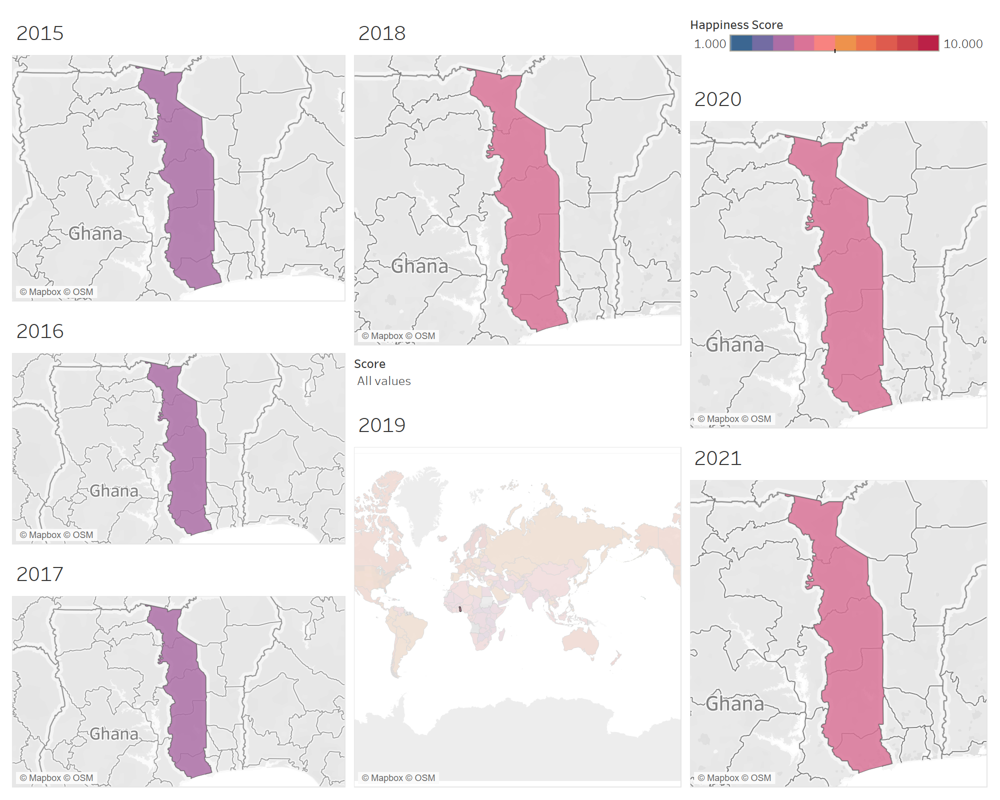
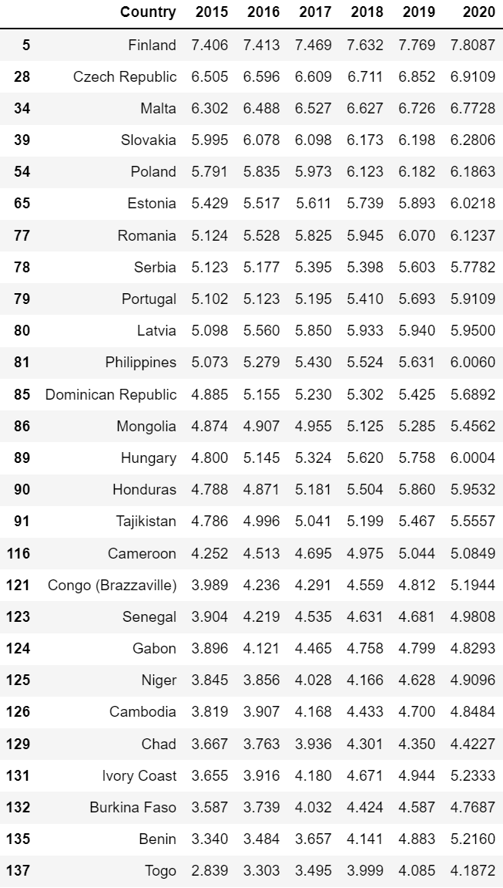

World Happiness Report Analysis
A closer look of world happiness from 2015 to 2021
Introduction
Why is happiness important? Why should we care about happiness scores in this fast-paced world? What might be some key indicator of happiness? What makes us happy as an individual? How does Covid-19 affect the happiness score?
Indeed, these questions are difficult to answer. Happiness is a subjective measure and can be hard to categorize. But undoubtedly, these questions serve as the baseline for other areas such as mental health and national growth, and are crucial to everyone’s daily life. First, we want to understand why happiness is important and why we should care about it. According to the resolution adopted by the UN General Assembly in 2011 titled “Happiness: towards a holistic approach to development”, the resolution states that “the pursuit of happiness is a fundamental human goal”; moreover, happiness is “a universal goal and aspiration embodies the spirit of Millennium Development Goal″. Moreover, many studies indicate that happiness not only relates to how we feel, but also “links to better decision-making and improved creativity”, and could be the key to success.
After learning the importance of happiness, now let’s look at this project. In this project, we aim to find out how the happiness score varies across different countries over the years and how the happiness score is affected by some important factors such as GDP per capita and healthy life expectancy. Then we look into the worldwide distribution of the happiness scores and the trends, trying to find out the secrets behind happiness. We used the World Happiness Report datasets to research the happiness level all over the world from 2015 to 2021. At the end of this report, we used the given data to perform a prediction of happiness level for 2022.
Now, let’s delve into the report...
Observations
Score Distribution
We first want to look into the world score distributions over the years.

In this graph, you can select the “year” in the upper left corner to check out the world score distribution for different years. Based on the fit curves, most people rated their happiness score around 4.5-6.5 and it has been consistent over the years, indicating most people were satisfied with their current lives but at the same time there might be some factors preventing them from giving the higher happiness scores.
Another thing that’s worth notice is that there are less and less people who tend to give the happiness score above 7, and a trend of growth between 4.5 to 6.5 from 2019 to 2021. People seem to have higher expectations or standards for being happy, and become more strict about what could make them happy.
After looking at the world score distribution, there are some questions that you might want to ask: what are some factors that could possibly affect the happiness score, and by how much? In the next section, we would like to look into different factors and how these factors might affect the overall score.
6 Features
There are six key variables used in the happiness report dataset to explain differences in average life evaluations.
- GDP per capita - a measure of a country’s economic output that accounts for its number of people
- Healthy Life Expectancy - Healthy life expectancies at birth based on the data extracted from the World Health Organization (WHO) data repository
- Social support - Defined as having someone to count on in times of trouble (ranked from 0 to 1)
- Freedom to make life choices - Defined as the national average of responses to the Gall-WorldPoll question (“Are you satisfied or dissatisfied with your freedom to choose what you do with your life?”)
- Generosity - National average of responses to the question - “Have you donated money to a charity in the past month?”
- Perception of corruption - National average of responses to the questions (“Is corruption widespread throughout the government or not” and “Is corruption widespread within businesses or not” )
Correlation between variables
Correlation
We looked into some important factors, which are logged Economy (GDP per Capita), Family (Social Support), logged Health (Life Expectancy), Freedom to make life choices, Generosity, and Trust (Perception of Corruption). We want to know how these affect the happiness score, and which factors have the strongest correlation among all. We made the scatter plots to show the relationship between these different factors and happiness. From the graphs we got, we can see that nearly all of them (except those in 2021 because of reasons we will explain later in this paragraph) have positive linear correlations, meaning if any of these factors has a higher rating, it will have a greater positive impact on the happiness score. We then look closer and see that the GDP has the least variation and outlier, indicating it’s consistent that the people who live in the higher GDP country usually have a high happiness score. On the other hand, generosity is the least correlated with happiness score, which means a country with a higher happiness score is not necessarily more generous than others. Just by looking at the graph, we consider the GDP and health has the largest correlation with happiness score. Because of different data processing methods used by the publisher in 2021, we have a data set with different scaling methods. For example, the trust indicator is (1 - trust) in previous years; and the logged GDP and life expectancy were squeezed toward 1 for unknown reasons. We then plot the heat map to confirm.
Correlation Heatmaps
2015 2021

This is the heat map of all the correlations for each year, respectively. You can manually choose the year from the upper left corner. The darker the red is, the stronger the correlation will be. Blue section indicates the negative correlation. From the Heat map here, we can see that GDP, social support, and Heath indeed have the strongest correlations with happiness score.
Now we look into the different regions and show the differences of happiness scores through the map.
Geographical Analysis
Interactive World Map
Below is an interactive plot that describes the happiness score in each country from 2015 to 2021
In this interactive plot, we use a color scale to differentiate the happiness score rated from 1 to 10. Even though most scores are between 2 to 8, we try to include some very extreme scores to avoid the ignorance of any country’s records. Based on the graph, we can see the countries in Africa have more changes than other continents, and countries like China have barely changed. However, take Russia as an example, even though the overall score did not change so much, the overall rank of Russia decreased through these years, from 64 in2015 to 76 in 2021. Therefore, we can conclude that it is not always a monotonic increase of the happiness score in all countries.
One country that attracts our attention is Togo, Africa. Togo has a significant increaseing in the happiness score. In 2015, it ranked the last among 158 countries, and had a score of 2.839; in 2016, the rank moved up a bit and it ranked 155 with 3.303 score; in 2017, it has 3.495 with a rank of 150; in 2018, it kept increasing to 3.999 with a rank of 139; the score kept increasing to 4.187 in 2020, and then followed by a slight decrease in 2021 due to Covid-19. The trend of happiness scores in Togo from 2015 to 2020 demonstrates a general pattern of the increasing happiness scores in most countries. 
After learning about all these insights, have you ever wondered if any countries have monotonic increasing scores? We will look into it next.
Countries with monotonic score increase
We obtained the world happiness report from 2015 to 2020. To better compare all countries’ scores, we first filtered the unnecessary columns and merged all data frames by intersection. After a short investigation, we found that the data set each year might contain different countries, and some countries might not exist on the data set in the next year. For example, Oman, Laos, Syria appeared in the 2015 report but not in the 2016 report. After intersecting all data frames, we have countries with consistent score records. To obtain the ones with monotonic score increase, we looped through all the columns containing scores and checked if the entries in the previous column were less than or equal to the entries in the current column. The result is the following table:
These countries shown in the table have the monotonic increasing score over the years.
Prediction
Machine Learning Prediction for 2022
We are curious about what the happiness score looks like in 2022, thus we decided to use the ML model to predict the possible outcome of 2022. We used the MLPRegressor model in sklearn to predict the potential happiness scores for 2022, and the data from 2015 to 2021 served as the training data. Some of the predicted scores are presented in the table above, and the accuracy rate is about 84.9%.
Conclusion
To sum up, We found out that fewer and fewer people tend to give scores that are higher than 7, and there’s a trend of growth between scores 4.5 to 6.5 from 2019 to 2021. When we looked into the factors that might affect the scores, we revealed that GDP per capita, social support, and healthy life expectancy have very strong impacts on happiness scores. Many countries have been doing a great job of having a monotonic increasing happiness score, and several countries in Africa had made progress in happiness over the past 5 years. If we look into regions worldwide, countries in Europe, America, and Australia reveal higher average happiness scores, which could be well explained by the discoveries we found from the dataset. In the end, we used the ML prediction to estimate the happiness outcome of 2022, and it has an accuracy rate of 84.9% if 2022 follows the trends of the previous year.
Hope you have learned some interesting facts after reading this report. Thanks for reading! :)